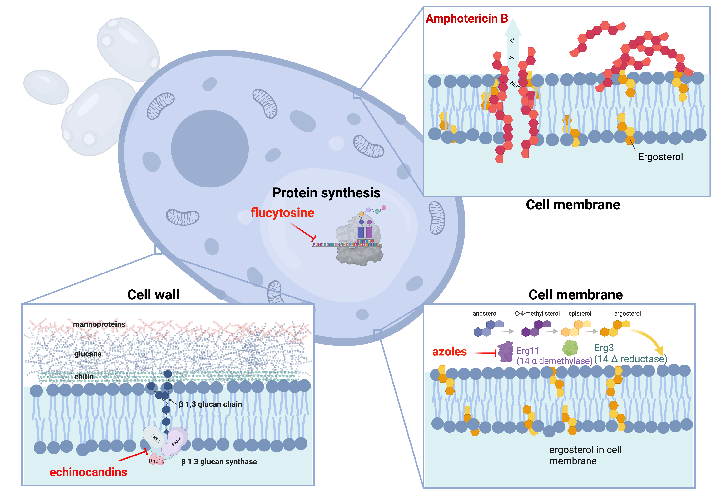
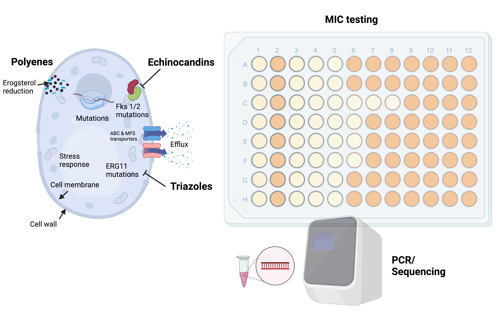
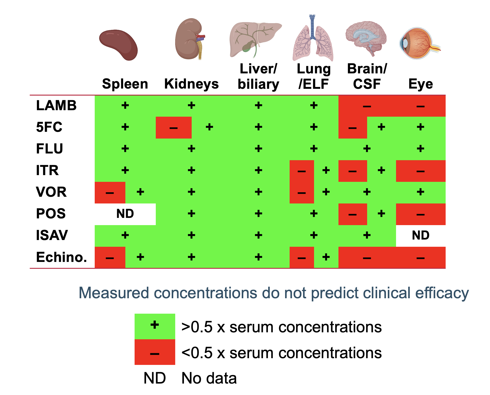
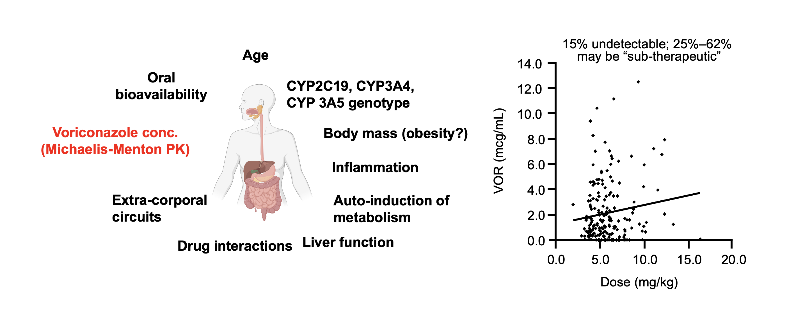
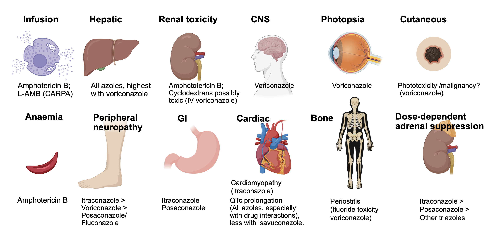
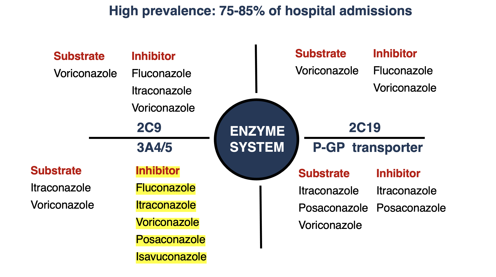

Principles and Complexity of Antifungal Therapy
Associate Professor of Medicine, Infectious Diseases
Department of Medical and Surgical Sciences
Infectious Diseases Unit- IRCCS S. Orsola University Hospitals
Alma Mater Studiorum Università di Bologna
Bologna, Italy
Disclosures
- Research funding: Merck & Co Inc., Gilead Sciences
- Speaking: Avir, Gilead
- Consultancy: F2G, Scynexis, Gilead Sciences, Cidara Therapeutics
Objectives
- Identify common pharmacological factors that affect treatment success
- Discuss how uncertainty in antifungal drug dosing can be addressed through PK/PD principles
- Recognise common toxicity problems with antifungals and the general management approach
Antifungal timeline
Current antifungal targets

What factors drive the success of antifungal therapy?

The PK/PD index

Antifungal PK/PD targets associated with efficacy
| Antifungal | Preclinical efficacy target | Clinical efficacy target |
|---|---|---|
| Amphotericin B (AMB) | Cmax/MIC; AUC0-24/MIC | Not established |
| Liposomal AMB | AUC0-24/MIC | Not established |
| Flucytosine (5FC) | Time > MIC | >20-45% Time >MIC |
| Fluconazole | AUC0-24/MIC | fAUC0-24/MIC < 25-100; Cmin 10-15 mg/L |
| Itraconazole | AUC0-24/MIC | Cmin > 0.5 mg/L (prophylaxis); Cmin> 1 mg/L (treatment) |
| Voriconazole | AUC0-24/MIC | fAUC0-24/MIC 25-50; Cmin > 1 mg/L or Cmin/MIC 2-5 mg/L |
| Posaconazole | AUC0-24/MIC | fAUC0-24/MIC 25-50; prophylaxis Cmin > 0.5-0.7 mg/L; treatment Cmin > 1 mg/L |
| Isavuconazole | AUC0-24/MIC | fAUC0-24/MIC 25-50 |
| Echinocandins | AUC0-24/MIC | AUC/MIC > 3000 |
What factors drive the success of antifungal therapy?
What factors drive the success of antifungal therapy?

Intrinsic activity of antifungals
.png)
Acquired antifungal resistance

Acquired resistance mechanisms and detection

Antifungal susceptibility testing- Where do we stand?
Reference methods for yeasts and moulds have been developed by:
European Committee on Antimicrobial Susceptibility Testing (EUCAST)
Clinical Laboratory Standards Institute (CLSI)
- Fungal species and drug-specific susceptibility breakpoints for Candida and Aspergillus spp.
Some commercial phenotypic and molecular tests are approved for detection of common antifungal resistance mechanisms
Need for “in house” antifungal susceptibility testing will increase with the introduction of new antifungals
Pharmacokinetic factors

Antifungal tissue distribution studies

Pharmacokinetic factors

Antifungal pharmacokinetics in the critically-ill

Pharmacokinetic complexity of voriconazole

Triazole therapeutic drug monitoring during
antifungal treatment
| Reference | Fluconazole (mg/L) |
Itraconazole (mg/L) |
Voriconazole (mg/L) |
Posaconazole (mg/L) |
Isavuconazole (mg/L) |
|---|---|---|---|---|---|
| (Gómez-López 2020) | Not routine | 1-4 (HPLC) | 1-6 | >1 | Not routine |
| (Ashbee et al. 2013) | Not routine | 0.5-1 (HPLC) | 1-6 | >1 | Not routine |
| (Scodavolpe et al. 2014) | AUC/MIC > 25; Cmin 10-15 |
>1-2 (HPLC) | 1-4 | 0.5-1.5 | Not routine |
| (M. M. Chau et al. 2014) | Not routine | 0.5-1 (HPLC) | 1-6 | >1 | Not routine |
| (Abdul-Aziz et al. 2020) | Not routine | >0.5-1 (HPLC) | 2-6 | >1 | Not routine |
| (Maggie M. Chau et al. 2021) | Not routine; Cmin >11 |
1-4 (HPLC) | 1-5.5 | >1 | Not routine |
Toxicity

Common antifungal toxicities

Antifungal toxicities: Acute vs. Chronic
Triazole drug interactions

What factors drive the success of antifungal therapy?
Summary
- Pharmacokinetic and pharmacodynamic factors need to be considered when selecting antifungal therapy
- MIC testing and therapeutic drug monitoring (TDM) are important tools used to address pharmacodynamic and pharmacokinetic variability of antifungals.
- Knowledge of PK/PD can be used to individualise patient drug selection and dosing to improve the probability of a positive microbiological/clinical outcome
- Antifungal toxicities and drug interactions are common, and should be anticipated and managed individually depending on the treatment scenario and risks (e.g., acute vs. chronic infections)
References
Abdul-Aziz, Mohd H., Jan-Willem C. Alffenaar, Matteo Bassetti, Hendrik Bracht, George Dimopoulos, Deborah Marriott, Michael N. Neely, et al. 2020. “Antimicrobial Therapeutic Drug Monitoring in Critically Ill Adult Patients: A Position Paper#.” Intensive Care Medicine 46 (6): 1127–53. https://doi.org/10.1007/s00134-020-06050-1.
Andes, David, Nkechi Azie, Hongbo Yang, Rachel Harrington, Caroline Kelley, Ruo-Ding Tan, Eric Q Wu, et al. 2016. “Drug-Drug Interaction Associated with Mold-Active Triazoles Among Hospitalized Patients.” Antimicrobial Agents and Chemotherapy 60 (6): 3398–3406. https://doi.org/10.1128/AAC.00054-16.
Ashbee, H. R., R. A. Barnes, E. M. Johnson, M. D. Richardson, R. Gorton, and W. W. Hope. 2013. “Therapeutic Drug Monitoring (TDM) of Antifungal Agents: Guidelines from the British Society for Medical Mycology.” Journal of Antimicrobial Chemotherapy 69 (5): 1162–76. https://doi.org/10.1093/jac/dkt508.
Brüggemann, Roger J. M., Jan-Willem C. Alffenaar, Nicole M. A. Blijlevens, Eliane M. Billaud, Jos G. W. Kosterink, Paul E. Verweij, David M. Burger, and Louis D. Saravolatz. 2009. “Clinical Relevance of the Pharmacokinetic Interactions of Azole Antifungal Drugs with Other Coadministered Agents.” Clinical Infectious Diseases 48 (10): 1441–58. https://doi.org/10.1086/598327.
Chau, M. M., D. C. M. Kong, S. J. van Hal, K. Urbancic, J. A. Trubiano, M. Cassumbhoy, J. Wilkes, et al. 2014. “Consensus Guidelines for Optimising Antifungal Drug Delivery and Monitoring to Avoid Toxicity and Improve Outcomes in Patients with Haematological Malignancy, 2014.” Internal Medicine Journal 44 (12b): 1364–88. https://doi.org/10.1111/imj.12600.
Chau, Maggie M., Kathryn Daveson, Jan-Willem C. Alffenaar, Amanda Gwee, Su Ann Ho, Deborah J. E. Marriott, Jason A. Trubiano, et al. 2021. “Consensus Guidelines for Optimising Antifungal Drug Delivery and Monitoring to Avoid Toxicity and Improve Outcomes in Patients with Haematological Malignancy and Haemopoietic Stem Cell Transplant Recipients, 2021.” Internal Medicine Journal 51 (S7): 37–66. https://doi.org/10.1111/imj.15587.
Felton, Timothy, Peter F. Troke, and William W. Hope. 2014. “Tissue Penetration of Antifungal Agents.” Clinical Microbiology Reviews 27 (1): 68–88. https://doi.org/10.1128/CMR.00046-13.
Gómez-López, A. 2020. “Antifungal Therapeutic Drug Monitoring: Focus on Drugs Without a Clear Recommendation.” Clinical Microbiology and Infection 26 (11): 1481–87. https://doi.org/10.1016/j.cmi.2020.05.037.
Johnson, Melissa D. 2021. “Antifungals in Clinical Use and the Pipeline.” Infectious Disease Clinics of North America, Fungal Infections, 35 (2): 341–71. https://doi.org/10.1016/j.idc.2021.03.005.
Lewis, R. E. 2011. “Current Concepts in Antifungal Pharmacology.” Mayo Clinic Proceedings 86 (8): 805–17. https://doi.org/10.4065/mcp.2011.0247.
Lewis, Russell E, and David R Andes. 2021. “Managing Uncertainty in Antifungal Dosing: Antibiograms, Therapeutic Drug Monitoring and Drug-Drug Interactions.” Current Opinion in Infectious Diseases 34 (4): 288–96. https://doi.org/10.1097/QCO.0000000000000740.
Roberts, Jason A, Mohd H Abdul-Aziz, Jeffrey Lipman, Johan W Mouton, Alexander A Vinks, Timothy W Felton, William W Hope, et al. 2014. “Individualised Antibiotic Dosing for Patients Who Are Critically Ill: Challenges and Potential Solutions.” The Lancet Infectious Diseases 14 (6): 498–509. https://doi.org/10.1016/S1473-3099(14)70036-2.
Scodavolpe, Simon, Sylvie Quaranta, Bruno Lacarelle, and Caroline Solas. 2014. “Triazole Antifungal Agents: Practice Guidelines of Therapeutic Drug Monitoring and Perspectives in Treatment Optimization.” Annales de Biologie Clinique 72 (4): 391–404. https://doi.org/10.1684/abc.2014.0968.
Theuretzbacher, Ursula. 2012. “Pharmacokinetic and Pharmacodynamic Issues for Antimicrobial Therapy in Patients with Cancer.” Clinical Infectious Diseases 54 (12): 1785–92. https://doi.org/10.1093/cid/cis210.
Trifilio, S, and J Mehta. 2014. “Antimicrobial Prophylaxis in Hematopoietic Stem Cell Transplantation Recipients: 10 Years After.” Transplant Infectious Disease: An Official Journal of the Transplantation Society 16 (4): 548–55. https://doi.org/10.1111/tid.12237.
Wiederhold, Nathan P. 2021. “Antifungal Susceptibility Testing: A Primer for Clinicians.” Open Forum Infectious Diseases 8 (11). https://doi.org/10.1093/ofid/ofab444.